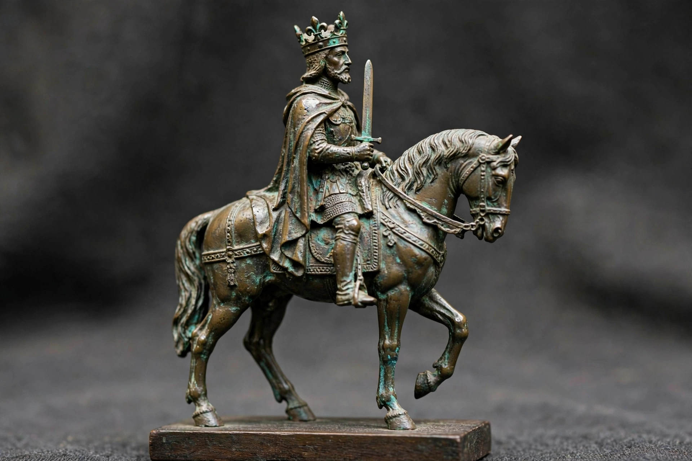

| Charlemagne | |
|---|---|
 | |
| King of the Franks | 9 October 768 – 28 January 814 |
| King of the Lombards | 10 July 774 – 28 January 814 |
| Emperor of the Romans | 25 December 800 – 28 January 814 |
| Born | 2 April 747 or 748 (uncertain), Francia |
| Died | 28 January 814, Aachen |
| Burial | Palatine Chapel, Aachen |
| Father | Pepin the Short |
| Mother | Bertrada of Laon |
| Religion | Chalcedonian Christianity |
Charlemagne (2 April 747/748 – 28 January 814), also known as Charles the Great (Latin: Carolus Magnus; French: Charlemagne), was King of the Franks from 768, King of the Lombards from 774, and Emperor of the Romans from 800. During the Early Middle Ages, Charlemagne succeeded in uniting the majority of western and central Europe and was the first recognized emperor to rule from western Europe after the fall of the Western Roman Empire nearly three centuries earlier. The expanded Frankish state he founded is known as the Carolingian Empire. Charlemagne is sometimes called the "Father of Europe" (Pater Europae).
Charlemagne was the eldest son of Pepin the Short and Bertrada of Laon. On Pepin's death in 768, the Frankish kingdom was divided between Charlemagne and his younger brother Carloman I, in accordance with Frankish custom. Relations between the brothers were strained, but Carloman's sudden death in 771 left Charlemagne sole ruler. He repudiated his Lombard wife Desiderata and disinherited Carloman's sons, who fled to the Lombard court.
In 773–774 Charlemagne conquered the Lombard kingdom of northern Italy and assumed its crown. From 772 he fought a series of brutal wars, lasting more than thirty years, against the pagan Saxons to the northeast, culminating in their conquest, forced conversion to Christianity, and incorporation into his empire; the campaign included episodes such as the Massacre of Verden (782), in which, according to the Royal Frankish Annals, 4,500 Saxon prisoners were executed. In Spain he intervened in 778, suffering the ambush of his rearguard at Roncevaux — later immortalized in the epic The Song of Roland — but eventually established the Spanish March south of the Pyrenees. He also subdued Bavaria, destroyed the Avar Khaganate in the 790s, and expanded Frankish influence among the Slavs. By 800 his empire stretched from the Atlantic to the Elbe and from the North Sea to central Italy.
On Christmas Day, 25 December 800, Pope Leo III crowned Charlemagne "Emperor of the Romans" in St Peter's Basilica in Rome. The coronation revived the imperial title in the West and signaled a lasting alliance — and rivalry — between the Frankish monarchy and the papacy, while challenging the claims of the Byzantine Empire, which eventually recognized his imperial title in 812.
Charlemagne governed through counts administering districts, royal agents called missi dominici who inspected local officials, and written edicts known as capitularies. From the 790s his court was fixed mainly at Aachen, where he built a palace complex with its celebrated Palatine Chapel. His reign saw the Carolingian Renaissance: scholars such as Alcuin of York reformed education and the liturgy, standardized a clear script (Carolingian minuscule), promoted the copying of classical and Christian texts, and revised the Latin Bible. Charlemagne himself spoke Frankish and Latin, studied grammar, rhetoric, and astronomy, though his biographer Einhard reports he never fully mastered writing.
Charlemagne died at Aachen on 28 January 814 and was buried in the Palatine Chapel. In 813 he had crowned his only surviving legitimate son, Louis the Pious, as co-emperor. After Louis's death, the empire was partitioned among Charlemagne's grandsons by the Treaty of Verdun (843), laying foundations for the later kingdoms of France and Germany. Charlemagne was canonized in 1165 under the auspices of Frederick Barbarossa (a canonization later regarded as irregular). Venerated in medieval epic and romance, and honored today by the Charlemagne Prize for services to European unity, he remains one of the most influential rulers of the European Middle Ages.
This article is a recreation from memory in the style of Wikipedia.